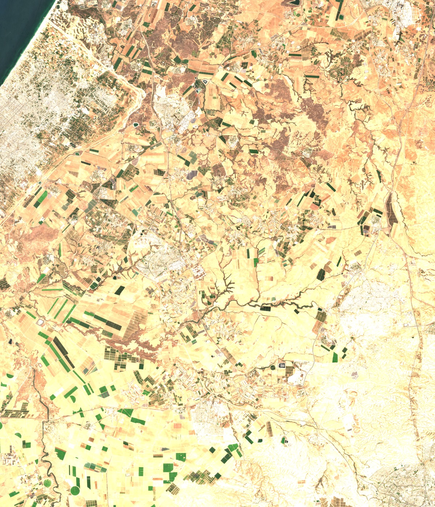
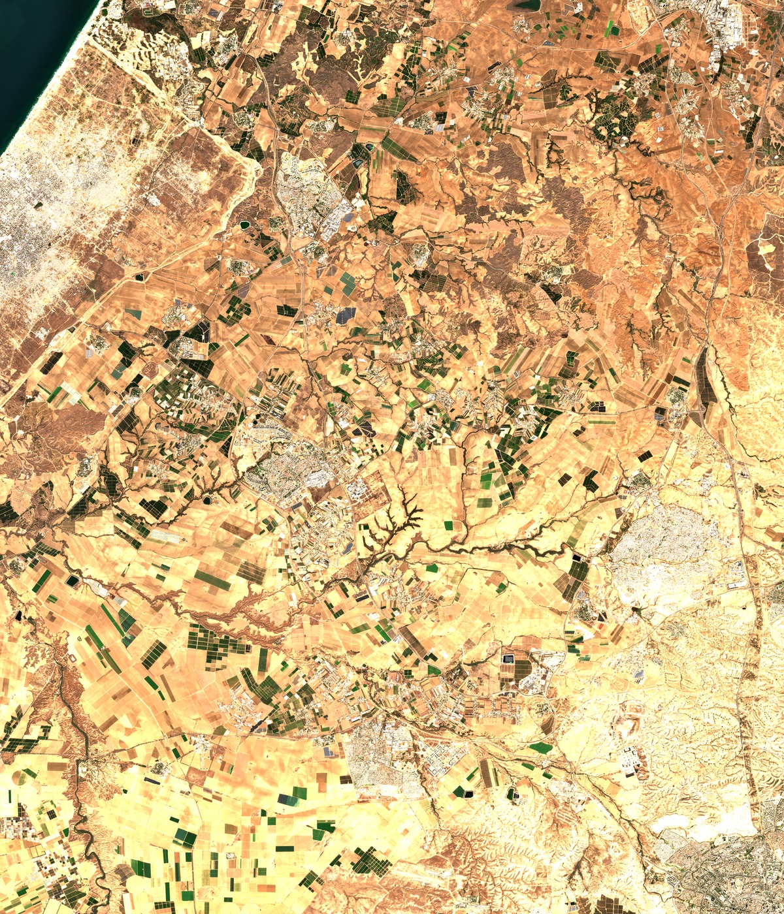

دليل بيئة العمل المعيارية داخل ArcGIS Pro (01_ArcGIS_Pro_Workspace)
تم بناء وتدقيق كافة الطبقات والمشاريع جغرافياً ومطابقتها لمسقط WGS 1984 UTM Zone 36N (EPSG:32636)
الملف: 01_ArcGIS_Pro_Workspace/Gaza_Damage_Assessment.aprx
يحتوي على خريطتين ومخطط إخراج A3 Landscape جاهز برمزية الألوان الأكاديمية وسهم الشمال والمقياس.
المسار: 01_ArcGIS_Pro_Workspace/Gaza_Master.gdb
Gaza_Neighborhoods_AR: 13 مضلع للأحياء مع تسميات باللغة العربية.UNOSAT_Damage_Classified: 170,835 موقعاً مصنفاً بالدرجات الأربع.Damage_Kernel_Density: شبكة بؤر التدمير والكثافة المكانية.
المسار: 02_Clean_Rasters_UTM36N/
4 مرئيات Sentinel-2 L2A بصيغة GeoTIFF ثلاثية النطاقات (RGB) بدقة 10م وإسقاط UTM 36N، خالية 100% من الغيوم والدخان ومعايرة مائياً.
المسار الزمني لموجات الضرب والدمار الفضائي (10 موجات موثقة)
التطور التراكمي لتوثيق الضربات عبر الأقمار الصناعية من أكتوبر 2023 حتى أحدث مسح 2026
قصف تمهيدي: بيت حانون والشجاعية
الاجتياح البري وتطويق مدينة غزة
اجتياح خان يونس ومخيمات الوسطى
اقتحام مجمع الشفاء وتسوية مدينة حمد
اجتياح رفح ومحور فيلادلفيا بالكامل
المقارنة البصرية الفضائية للمناطق المتضررة (قبل وبعد)
اختر المحافظة لاستعراض صور الأقمار الصناعية عالية الدقة قبل الحرب وبعد التدمير


مرئيات فضائية بدقة 300 DPI جاهزة للمناقشة الأكاديمية
جدول إحصائيات الأضرار المعتمدة لكل محافظة (UNOSAT Verified Table)
مستخرج مباشرة من قاعدة البيانات الجغرافية Gaza_Master.gdb عبر جسر ArcGIS MCP Bridge
| المحافظة | Governorate | مدمر كلياً (Destroyed) | دمار شديد (Severe) | دمار متوسط (Moderate) | دمار محتمل (Possible) | إجمالي المواقع | نسبة الدمار |
|---|---|---|---|---|---|---|---|
| محافظة غزة | Gaza City | 14,897 | 5,287 | 15,933 | 10,854 | 46,971 | 27.50% |
| محافظة خان يونس | Khan Younis | 15,046 | 4,836 | 14,678 | 7,798 | 42,358 | 24.80% |
| محافظة شمال غزة | North Gaza | 12,458 | 5,679 | 13,673 | 5,540 | 37,350 | 21.86% |
| محافظة رفح | Rafah | 13,418 | 2,573 | 6,542 | 4,003 | 26,536 | 15.53% |
| محافظة دير البلح | Deir Al-Balah | 4,554 | 1,690 | 5,469 | 5,907 | 17,620 | 10.31% |
| الإجمالي العام | Total Strip | 60,373 | 20,065 | 56,295 | 34,102 | 170,835 | 100.0% |